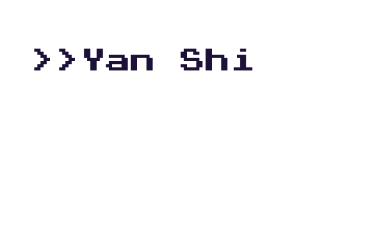

HELLO! 您好! GUTEN TAG!
As a student majoring in broadcast journalism and minoring in
computer science at American University, I am interested in
journalistic writing, learning about the way we interact with (and
react to) media and finding ways to make media more accessible. I
believe that in today’s world it is imperative that people have
access to a wide variety of news sources and that the media is
adapting to the ever-changing technological environment.
I believe that journalism and computer science will lead to innovation: new ways
to look at the world, new ways to interpret the world, and new ways to tell a
story to the world.